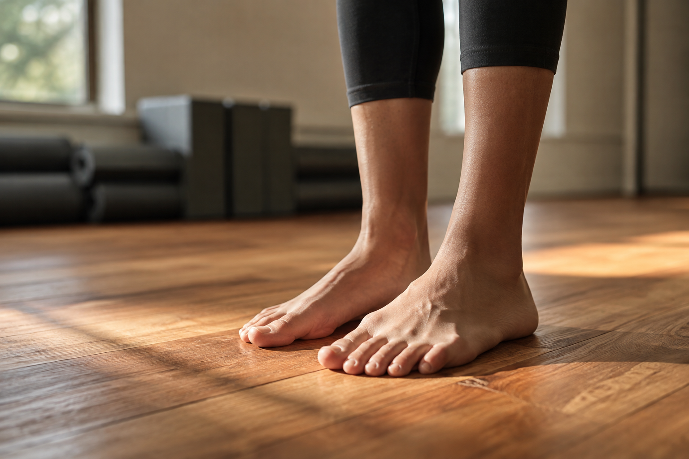

瑜伽的說法哪些是真的，哪些只是行銷噱頭？

- 瑜伽相關的說法很多，有些有實際根據，有些是被過度包裝、甚至只是行銷話術。
- 這篇想誠實拆解幾句常聽到的說法，不護航、也不為了唱反調而全盤否定。
- 拆穿誇大的說法，不代表瑜伽沒有價值，只是它的價值不需要靠誇張包裝。
- 看完可以想想自己相信的瑜伽說法裡，有沒有哪句其實禁不起細看。
「瑜伽能排毒」「瑜伽能治百病」「瑜伽練得越勤效果越好」——這些說法流傳很廣，聽久了很容易照單全收。這篇想誠實把幾句常聽到的說法拿出來檢視，看看哪些站得住腳，哪些只是聽起來厲害的行銷話術。
說法一：瑜伽能「排毒」
「排毒」是瑜伽行銷裡最常出現的詞之一，聽起來很吸引人，卻沒有明確的醫學定義。身體代謝廢物本來就有肝臟、腎臟這套內建系統在負責，不需要靠特定運動額外「排」出什麼。瑜伽練習確實能促進血液循環、幫助身體放鬆，這是真的，但把這些效果包裝成「排毒」，容易讓人誤以為有超出實際範圍的神奇作用，這篇不會用這個詞來介紹壁繩瑜伽。
說法二：瑜伽能「治百病」
這句話幾乎是所有誇大行銷的共通模板，套在任何運動類型上都成立，也因此幾乎沒有實質意義。瑜伽對姿勢代償、活動度、身心放鬆有一定幫助，這些是具體、可以說明的效果；但「治百病」這種籠統又誇張的說法，通常代表講的人沒有打算誠實區分「哪些有幫助、哪些沒有」，只是想用最大範圍的承諾吸引人。
說法三：瑜伽練得越勤，效果一定越好
這句話聽起來很勵志，卻忽略了身體需要恢復時間這件事。過度頻繁、又沒有搭配足夠休息的練習，有時候反而會累積疲勞、增加受傷風險，效果不見得比規律適量的練習更好。「勤」不等於「有效」，身體的恢復跟練習本身一樣重要，這也是為什麼多數專業教學不會鼓勵無限制地增加練習頻率。
說法四：柔軟度越好，代表身體越健康
柔軟度只是身體狀態的其中一個面向，不是全部。有些人柔軟度很好，但關節周圍的穩定度、力量控制卻跟不上，長期下來反而容易受傷；健康的身體，比較準確的描述是活動度、力量、穩定度三者都到位，而不是單看柔軟度這一項指標。把柔軟度當成唯一的健康標準，容易讓人忽略力量與穩定度同樣重要。
說法五：瑜伽是溫和運動，不會受傷
這句話忽略了一個事實：任何運動方式，只要動作不對、強度不適合、或忽略身體發出的警訊，都有受傷的可能，瑜伽也不例外。過度伸展、勉強做超出自己能力範圍的動作，同樣可能造成傷害。「溫和」是相對其他高強度運動而言，不代表可以完全不注意身體的反應、隨便亂做都不會有事。
那，誠實地說，瑜伽真正的價值在哪裡
拆穿這幾句誇大的說法，不代表瑜伽沒有價值。它真正能提供的，是活動度的維持、身體感知的建立、姿勢代償的調整，以及呼吸與神經系統的放鬆——這些效果不需要靠「排毒」「治百病」這種誇張的詞彙來包裝，本身就有實際的意義。與其相信誇張的行銷話術，不如花時間了解自己身體實際的需求。
不誇大，也不否定，是這篇想做到的事
寫這篇的目的不是要澆熄大家對瑜伽的興趣，而是希望在決定要不要開始、或評估目前的練習方式時，能有比較誠實的參考依據，不被誇張的說法牽著走。瑜伽值得被認真看待，也正因為如此，它不需要靠誇大的話術來包裝。
本文為一般性體態與運動知識分享，非醫療診斷或治療。若練習過程中有明顯不適，請先諮詢醫師或物理治療等專業醫療人員。
常見問題
瑜伽真的能排毒嗎？
「排毒」這個說法沒有明確的醫學定義，身體本身有肝臟、腎臟負責代謝廢物，瑜伽練習能促進血液循環、幫助放鬆，但用「排毒」這種說法包裝，容易讓人誤以為有超出實際範圍的效果。
瑜伽真的能瘦身嗎？
瑜伽對體態、肌肉張力可能有幫助，但體重與體脂的改變主要取決於整體熱量與運動習慣，單靠瑜伽練習不保證能達到特定的瘦身效果，這篇不會做這種承諾。
是不是瑜伽練得越勤，效果一定越好？
不一定。身體需要足夠的恢復時間，過度頻繁又缺乏休息的練習，有時候反而增加身體負擔。規律、適量、搭配足夠休息，通常比一味追求高頻率更有幫助。
這篇是不是在說瑜伽沒有用？
不是。這篇想拆解的是被誇大、被過度包裝的說法，不是否定瑜伽本身的價值。瑜伽在活動度、身體感知、姿勢代償調整上有實際幫助，只是這些幫助不需要靠誇張的說法來包裝。